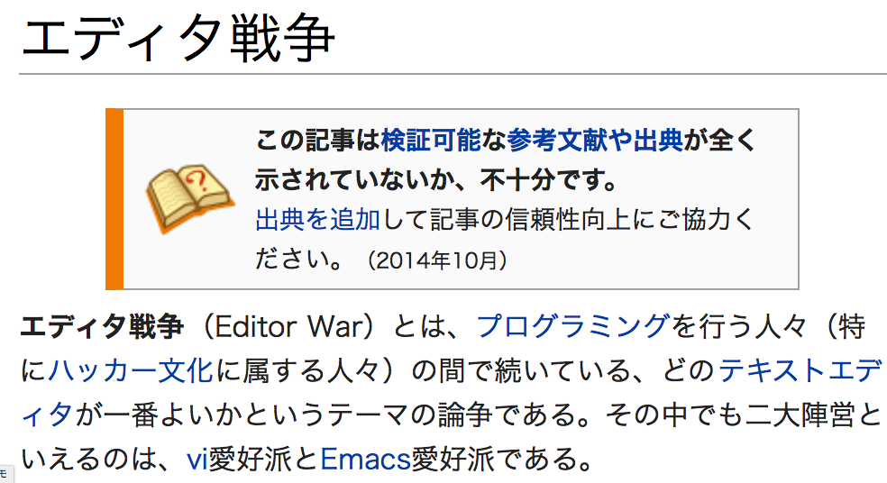
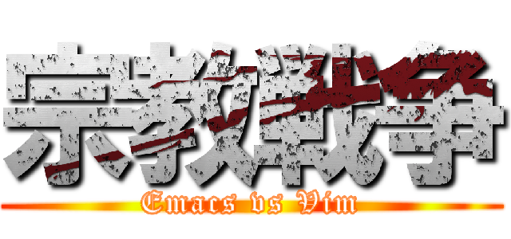
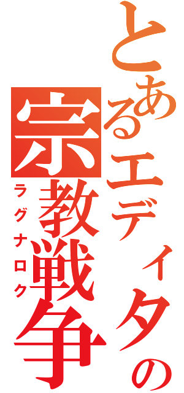
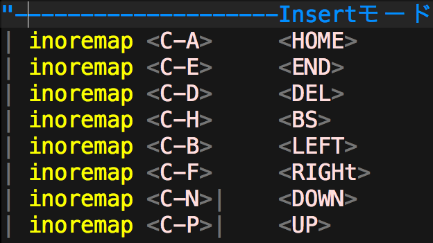

邪教 Vim ---- <img src="./img/1.png" width="70%" alt=""> <!--<font color="chocolate">文字色</font>--> ---- ----  ----  ----  ---- はい ---- 2つの 目的は 同じ ---- <font color="red">楽な タイピング</font> ---- コマンドで 快適な 編集作業 ---- Vim 特徴 ---- 単純な コマンド ---- hjkl ←↓↑→ ---- だが しかし ---- <font color="red">モード 切り替え 面倒！</font> ---- 一文字前に 戻るとき ---- ESC h i ---- emacs なら Ctrl+b ---- emacs 特徴 ---- モード 切り替え なし！ ---- だが しかし ---- <font color="red">小指が いかれる</font> ---- <font color="red">Control キー 押しまくり</font> ---- 保存 Ctrl+x Ctrl+s ---- はい ---- なんとか ならんのか ---- ---- ---- <font color="red">Vim</font>の Insert モードで ---- <font color="red">emacs</font>の コマンド を使おう ----  ---- めっちゃ 楽 ---- ただし ---- 両陣営 に嫌われる ---- だから <font color="red">邪教！</font> ---- お わ り